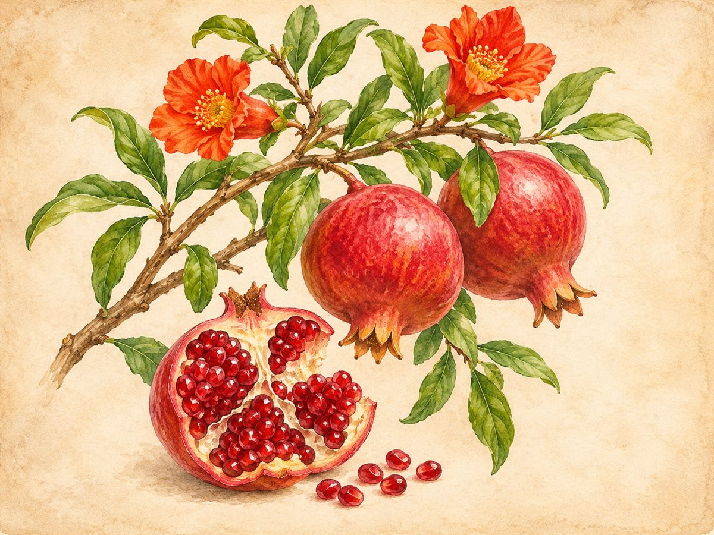
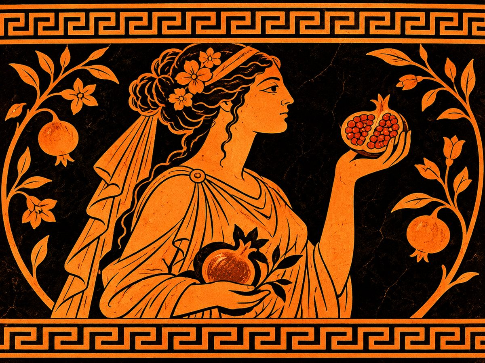
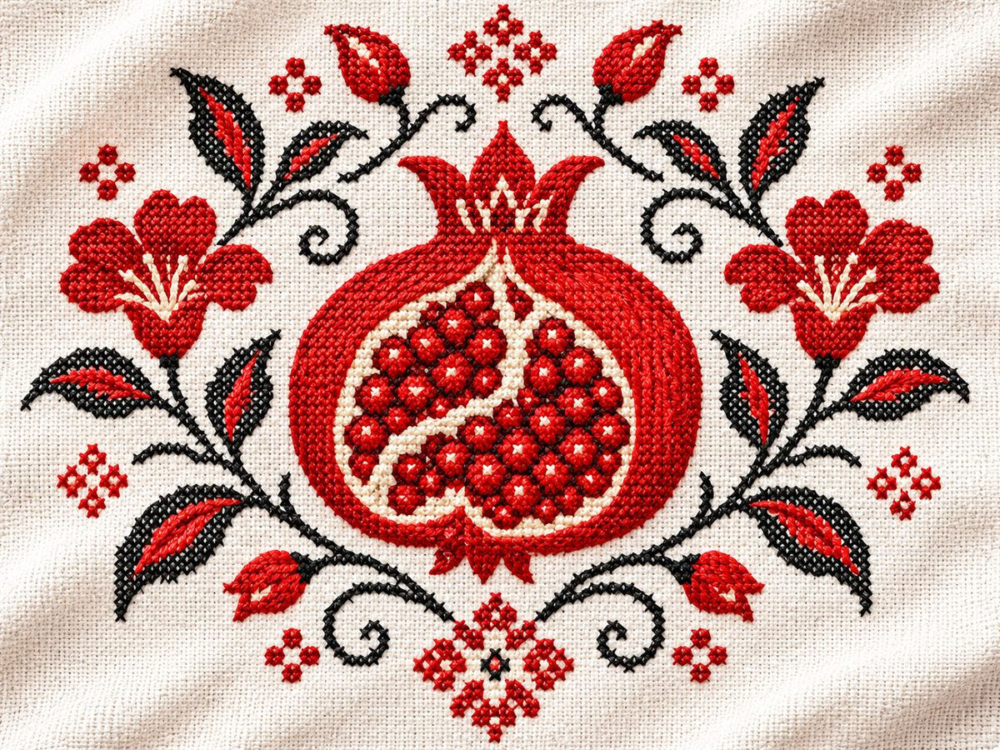
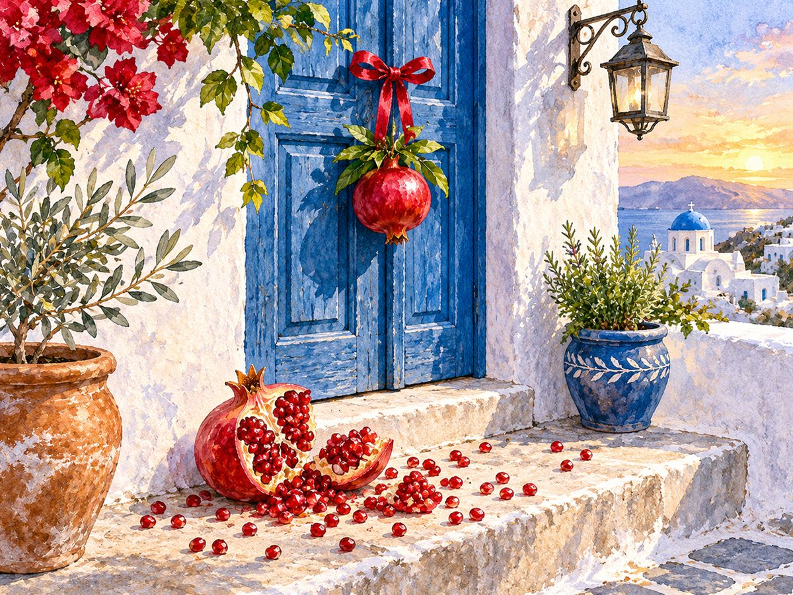
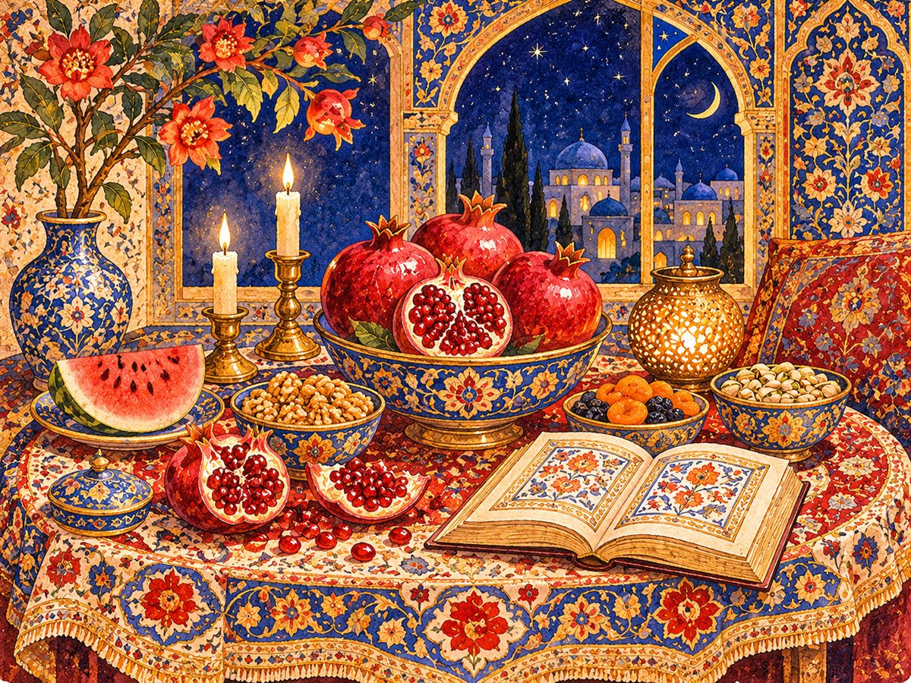

Granátové jablko
Punica granatum · v čaji kúsky plodu, zrnká alebo len príchuť · v mojej zbierke v ovocných čajoch
Málokteré ovocie dalo meno toľkým veciam. Podľa granátového jablka sa volá drahokam, ale aj zbraň, a jeho tvar zdobí slovenské výšivky. Jedno meno pre jedlo, pre ničenie aj pre parádu. Vo vrecúškach z mojej zbierky ho nájdete v tej najmierumilovnejšej podobe – ako kúsky ovocia, zrnká alebo len vôňu.

Zrnité jablko z Kartága
Granátovník pochádza z oblasti od dnešného Iránu a Afganistanu po sever Indie. Starí Rimania ho volali malum punicum – „púnske jablko“, teda jablko z Kartága, ktorého obyvateľov nazývali Púnmi. Najlepšie plody k nim prichádzali práve odtiaľ, takže meno prezrádza obchodnú cestu, nie domovinu.
Druhé meno, granatum, znamená „zrnitý“ – od latinského granum, zrnko. Švédsky prírodovedec Carl Linné obe mená spojil, a tak sa granátovník dodnes latinsky volá Punica granatum. A po slovensky je to vlastne „zrnité jablko“.
Koľko je v ňom zrniek?
Keď granátové jablko rozlomíte, nájdete v ňom stovky zrniek. Každé je obalené priehľadnou šťavnatou dužinou – to je tá rubínová časť, ktorá sa je. Hovorí sa, že zrniek je presne 613, rovnako ako prikázaní v židovskej tradícii. Je to však len krásne prirovnanie. V skutočnosti ich má jedno jablko podľa veľkosti asi 200 až 1 400 – žiadne dve nie sú rovnaké.
Prečo je v zime zima
Starí Gréci si granátovým jablkom vysvetľovali striedanie ročných období. Boh podsvetia Hádes uniesol Perzefonu, dcéru bohyne úrody Deméter. Smutná Deméter sa prestala starať o úrodu a zem pustla. Bohovia napokon dovolili Perzefone vrátiť sa k matke – ibaže v podsvetí ochutnala zrnko granátového jablka. A kto tam niečo zje, musí sa tam vracať. Preto časť roka trávi pod zemou a vtedy je na zemi zima.
V najstaršom zachovanom príbehu, v takzvanom Homérskom hymne na Deméter, zjedla jediné zrnko a v podsvetí trávi tretinu roka. Rímsky básnik Ovídius píše o siedmich zrnkách. Často počuť aj o šiestich zrnkách a šiestich mesiacoch – to je však až novšie prerozprávanie.

Z jablka drahokam
Tmavočervený drahý kameň granát dostal meno už v stredoveku – podľa farby, ktorá pripomína zrnká granátového jablka. Najslávnejší je český granát, odborne pyrop, po grécky „ohnivé oko“.
Veľkú slávu mu urobil cisár Rudolf II., ktorý koncom 16. storočia sídlil v Prahe a drahé kamene miloval. Praha sa vtedy stala strediskom brúsenia drahokamov. Cisárov lekár Anselmus Boëtius de Boodt v roku 1609 opísal tento kameň ako granatus bohemus – český granát. A cisárovná Mária Terézia v roku 1762 zakázala vyvážať surové granáty z Čiech, aby sa brúsili doma. Ťažia sa dodnes.
Z jablka zbraň
V 16. storočí sa vo vojnách objavila malá dutá guľa plná pušného prachu. Tvarom pripomínala granátové jablko a vnútri bola „plná zrniek“ – a tak dostala jeho meno: granát. Vojakov, ktorí ich hádzali, nazvali granátnikmi.
Vo francúzskom kráľovskom vojsku vznikla prvá rota granátnikov v roku 1667 a čoskoro ich mali aj ďalšie armády. Bola to nebezpečná služba: puška strieľala ďaleko, ale granát doletel len tam, kam ho dohodila ruka. Granátnik sa preto musel dostať blízko k nepriateľovi. Vyberali sa naň najsilnejší a najvyšší vojaci, často šli do útoku ako prví, dostávali vyšší žold a mali sa za elitu. Aj čiapky nosili iné než ostatní – široký klobúk im prekážal, keď si prehadzovali pušku cez plece a hádzali granát.
Granáty sa neskôr z rúk prestali hádzať, ale meno granátnikov zostalo ako znak vybraných, elitných vojakov. Ospevujú ich aj piesne – napríklad slávny anglický pochod The British Grenadiers (Britskí granátnici).
Z jablka paráda
Granátové jablko je aj obľúbený ornament. Prišiel z Orientu a v Európe sa objavuje na tkaninách zo 14. storočia a na talianskych brokátoch z 15. storočia. V Uhorsku zdobil renesančné látky a odtiaľ sa dostal aj do ľudového umenia. Na Slovensku ho nájdete veľmi často vo výšivke a čipke, v rezbách aj na maľovaných stenách.
Je to zvláštne, lebo granátovník u nás nerastie a skutočný plod väčšina našich predkov nikdy nevidela. Vzor však poznali z drahých dovážaných látok. Talianske brokáty s granátovými jablkami sa používali na šaty šľachty aj na omšové rúcha – a tie mohol v kostole vidieť každý. Vzor sa tak dostal k ľuďom skôr než samotné ovocie.

V kostoloch malo granátové jablko aj svoj význam. Podľa jednej starej tradície bolo práve ono tým zakázaným ovocím, ktoré v raji zjedli Adam a Eva. Inak bolo znakom vzkriesenia a mnoho zrniek v jednej šupke pripomínalo jednotu mnohých ľudí. Rozlomené jablko plné zrniek znamenalo aj štedrosť a dobročinnosť. Preto ho má vo svojom znaku – s krížom, ktorý z neho vyrastá – rád milosrdných bratov. Jeho zakladateľ, svätý Ján z Boha, začínal pomáhať chorým v Granade.
A jedno granátové jablko má na erbe celé kráľovstvo. Keď v roku 1492 Katolícki panovníci Izabela a Ferdinand dobyli Granadu, pridali granátové jablko do spodnej časti kráľovského erbu. V erbe Španielska je dodnes. A samotní obyvatelia Granady si meno svojho mesta najčastejšie vysvetľujú práve podľa granátového jablka – rozlomené ho má mesto aj vo svojom erbe. Jazykovedci ponúkajú aj iné vysvetlenia, ale v Granade sa rozpráva toto.
Pre šťastie
V Grécku visí cez sviatky pri dverách mnohých domov granátové jablko. Na Nový rok ho niekto z rodiny rozbije o prah – a čím viac zrniek sa rozletí, tým viac šťastia bude mať rodina v novom roku. Kto ho rozbíja a či o polnoci, alebo ráno, to sa líši podľa rodiny a kraja.

V Iráne, odkiaľ granátovník pochádza, sa slávi Jalda – najdlhšia noc roka, keď je zimný slnovrat. Rodina sa stretne u starých rodičov, bdie do rána, číta básne a na stole nesmú chýbať granátové jablká a červený melón. Ich červená farba pripomína teplo a svetlo, ktoré sa po najdlhšej noci začne vracať. Od roku 2022 je Jalda na zozname nehmotného kultúrneho dedičstva UNESCO.

A v Arménsku, kde je granátové jablko jedným zo symbolov krajiny, sa rozprávky končia slovami: „Z neba spadli tri jablká: jedno pre rozprávača, jedno pre poslucháča a jedno pre celý svet.“ Najčastejšie sú to obyčajné jablká, ale niektorí rozprávači hovoria o granátových.
Šupka na kožu a na vlnu
Ani šupka granátového jablka nepríde nazmar. Je plná trieslovín, a preto sa ňou odpradávna činila koža a farbili látky – vlna z nej býva hnedá až čierna, šupka nezrelých plodov dáva žltú farbu. V Maroku dnes vedci skúmajú, či by šupka zo zvyškov po lisovaní šťavy nemohla pri činení kože nahradiť chemikálie.
Granátové jablko vo vrecúšku
Vo vrecúškach z mojej zbierky je granátové jablko vždy v ovocných čajoch a často len ako príchuť. Oplatí sa čítať zloženie: na vrecúšku Julius Meinl s čerešňou a granátovým jablkom je zrniek granátového jablka len 1 % – najviac je tam citrónovej trávy. (Tá je mimochodom naozaj tráva – príbuzná našim lúčnym trávam aj obiliu, len vonia ako citrón.) Ale tak to už s menami na obaloch býva: sľubujú chuť, nie množstvo.
Tak sa kruh uzatvára. Plod, ktorý dal meno drahokamu aj zbrani, ktorý zdobí výšivky aj kráľovský erb, sa nakoniec ocitol vo vrecúšku čaju. A to je zo všetkých jeho podôb tá najmierumilovnejšia.
Zdroje
- Granátové jablko – Encyklopédia ľudovej kultúry Slovenska
- Granátové jabĺčko – Encyclopaedia Beliana, SAV
- Vzor granátového jablka na renesančných omšových rúchach – Liturgical Arts Journal (anglicky)
- Herbs in History: Pomegranate – American Herbal Products Association (anglicky)
- Granátové jablká od staroveku po dnešok – Alimentarium (anglicky)
- Pomegranate – Online Etymology Dictionary (anglicky)
- Grenade – Online Etymology Dictionary (anglicky)
- Koľko zrniek má granátové jablko – Jewish Action (anglicky)
- Granátové jablko v dejinách a mýtoch – JSTOR Daily (anglicky)
- Mýty o Deméter a Perzefone – Theoi (anglicky)
- Český granát – symbol české země – Praha 1 (česky)
- Český granát a brúsenie – CzechTourism (anglicky)
- Grenadier – Wikipedia (anglicky)
- British Grenadiers – Military History Matters (anglicky)
- Erb Španielska – Wikipedia (anglicky)
- Pôvod mena Granada – El Debate (španielsky)
- Prečo Gréci na Nový rok rozbíjajú granátové jablko – Greek Reporter (anglicky)
- Jalda – UNESCO (anglicky)
- Koniec arménskych rozprávok – USC Folklore Archives (anglicky)
- Pomegranate – CAMEO, Museum of Fine Arts Boston (anglicky; šupka na kožu a farbenie)
Text pripravil Claude, spolutvorca stránky.
Táto stránka je o čajoch, ktoré si kúpite v obchode, a o mojej zbierke ich obalov. Nie je návodom na zber rastlín.